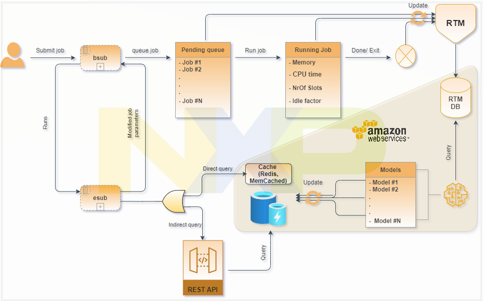

Job Allocation Recommender System Using Machine Learning
An internship project at NXP Semiconductors using a machine learning approach to predict the amount of
compute memory needed by jobs that are submitted to a Load Sharing Facility (LSF).
Project Overview
NXP is a large semiconductor firm, which alongside developing cutting-edge products and solutions for Mobile, the Connected Car, Cyber Security
Portable & Wearable and the Internet of Things, they also provide license
environments and computational resources such as memory, CPU's and storage via cloud
technology to many end users around the globe. For this purpose, NXP uses LSF – Load Sharing Facility
- Software to allocate resources to their clients.
In cloud and distributed computing, efficient task scheduling can have a major
impact on performance. Task schedulers receive the jobs to be computed, and
then dynamically make decisions about which network resources should be used for
each job and when they will be completed relative to other jobs. The network
consists of individual machines, each with finite CPU cores and memory.
Finding an optimal allocation of jobs to machines (such that throughput is
maximized, or total compute time for all jobs is minimized) is an NP-hard problem [1]. This means that finding the absolute optimal solution for job allocation
cannot be computed in polynomial time; as the number of jobs increases, the
computational overhead grows massively. Therefore, for these types of problems we rely on heuristic algorithms which allow us to produce close to optimal
solutions in a reasonable time.
Project Goal
The goal of this project is to improve overall performance of the network,
which can be measured by a number of related metrics including average waiting
time for a job. The approach is to improve the accuracy of resource specification,
which is a key parameter in the scheduling. Currently, the design engineers
make these resource estimates manually based on past experience. Naturally,
this leads to non-optimal specification which has implications for performance:
under-specification of required resources can lead to delays as more resources
need to be allocated, or can lead to the job being outright terminated. Over-specification ties up resources which could have been used for other jobs, and
can leave these jobs pending for long periods of time.
This project has delivered a prototype solution to automate this task and generate estimates for the parameters
using machine learning models based on historical data. This is a sound foundation for further developments and improvements within NXP.
[1] Definition: The complexity class of decision problems that are intrinsically harder than those that can be solved by a nondeterministic Turing machine in polynomial time Wikipedia.
Timeline
Here you can find the path through my project in 6 phases. Each phase (usually 4 to 6 weeks long) has unique goals which we tried to achieve in multiple sprints.
Week 1 - 4
Exploratory Phase
The first phase of the assignment is an exploratory phase to get familiar with the data, the IT systems and
software tools (Splunk, AWS athena and AWS Sagemaker) and the problem domain. After the initial
introduction, I worked together with experts from DA -Data Analytics- and HPC -High Performance Computing- to have a closer look into the available
data sources (RTM, PA, FNM). The data analysis specialists have assisted our team in this stage to understand the
structure of the data and the software tools. In parallel, existing solutions were researched to gain further understanding to the problem domain and analyze competitors.
Click to see more!
Week 5 - 8
Profiling phase
The profiling phase aims to evaluate specific EDA -Electronic Design Automation- tools in combination with HW -Hardware- designers (along with another
relevant factor in consultation with the DA -Data Analytics- /HPC -High Performance Computing- domain experts) such that it is clear from the analysis
how muchHPC -High Performance Computing- resources the selected EDA tool requires. Also, during this phase, we chose a specific user and analyzed their
required resources by diving into their day-to-day jobs as submitted on LSF. We employ relatively simple techniques such as the 'moving average'
and 'linear regression', to predict their required memory allocation. Click to see more!
Exploratory Phase
×
Week 9 - 14
Prediction Phase (Prototype V1)
The prediction phase was used to further employ the findings of the previous analysis by actively predicting
CPU, memory and EDA license usage for the selected EDA tools. During this phase, we build the first iteration of the model by experimenting with various algorithms such as
'RandomForest', 'Linear Regression' and etc. These models are trained
and tested on the RTM dataset which consist of submitted and finished
jobs during the month of March 2021 with more than 2 million rows and about 110 different features.
We designed pipelines to prepare, clean and automatically select the best features of the data before feeding it into the models. After fine-tuning the models, the 'RandomForest' algorithm perfomed the best
with a 64% r2 score. Click to see more!
Week 15 - 17
Prediction Phase (Prototype V2)
The next challenge was to apply the model to a larger context, running it on data from the previous 6 months data with more than 14 million rows. We re-trained and fine-tuned the selected models
. In order to improve our accuracy and lower the error margin ('mae'), we built more features by reaching outside of the RTM dataset and
applied different potential solutions to engineer the features which resulted in improvements. Click to see more!
Week 18 - 20
Optimization Phase (Testing)
During the optimization phase the insights from big data
were applied in HPC -High Performance Computing- jobs. This phase involved active monitoring of the LSF job duration and resources to ensure that
our models are indeed delivering the expected results.Click to see more!
Week 21 - 24
Deployment Phase
After getting the model's approval during the testing phase, we built an architecture to fit the models into the job allocation progress. At the first stage,
the new architecture plan will be available to a specific group to further evaluate and improve the solution. Click to see more!
Dive deeper
Exploratory & Profiling Phase
Sub-questions
What are the existing solutions to our problem in the market?
How can we study and analyse our data? and what are the best tools for this purpose?
Methods & Results
NXP is not the only firm trying to build an automate recommender system using AI. Utilizing the compute resources and optimally allocate them to jobs is a challenge to many large
firms such as Qualcomm Technologies Inc. During the exploratory phase, we studied on how Qualcomm managed to tackle the similar issue as NXP, using a private product developed
by their scientists. Obviously, Qualcomm has not published detail footsteps to solve their problem but studying their report was helpful to get a better grasp on how the entire
chip design cycle looks like and how important utilization is in today's competitive market. Furthermore, we observed which regression models could perform the best. This gave us
a good understanding on what we can expect from different approaches. Moreover, We studied on what solutions can improve the job pending issue where jobs stay in a long queue
due to over-booking the resources in many jobs by users.
Mark Jones is an expert working as the HPC -High Performance Computing- Systems Architect and team lead at NXP based in Texas, United States. His work is around operational management of LSF batch computing clusters and Platform Analytics.
During our project, he helped us in understanding the way of working of LSF and gave us great introductions and tutorials. With many meetings -usually 1-2 times a month-, he helped us to modify our project proposal, our approaches for the prototypes/models and find possibilities and pitfalls
we might face in our journey.
During our exploratory data analysis, we started with analyzing one single user's resources usage and
tried to analyze the trend on his memory usage in the past one month who was working at the same department as us and it was relatively easy to contact him for questions and monitor
his jobs. later we built our first model on this user and tried to predict his memory and CPU usage(more about this will be discussed in the prediction phase). Then, we looked at a bigger picture
by analyzing the jobs submitted by the top 5 projects in job submission counts in one month period. We found interesting trends and insights by finding correlations between days of week and project names
with memory and CPU usage. For example, at the end of the week, jobs tend to be heavier on memory and CPU usage, Also, we tried to cluster different users and projects based on their usage.
These steps were useful in our model developments.
Regarding tools selection, 'Python 3' and 'pyspark' were the main tools in the exploratory data analysis and development
of the models. NXP uses 'Splunk Technology' , a software to search, monitor and analyze machine-generated data via a web-style interface. This platform helps us to query the data from data lake
which is stored in the AWS environment. Therefore, knowing my way around AWS and 'Splunk' was essential for us to start our project which was done by mostly self studies and a few
introduction meetings organized specifically for us by NXP Data Analytics team.
Conclusion
Exploratory Phase
never ended throughout the whole project. We constantly had to study the way of working of job allocations by reading articles, self-studying and attending many stand-ups and meetings
with experts to get a good grasp on the problem. Cutting the main problem into smaller problems was a great way of working. Instead of directly dealing with all the users and projects,
zooming in one single user in a short time window was helpful to understand the nature of the data. This allowed us to be able to reach out to the chosen user continuously during the exploring
and have a better understanding of their behavior. Back to the timeline
Prediction Phase
Sub-questions
Can we get any valuable solution to our problem without machine learning?
What are the best suited machine learning models and which ones perform the best?
What are the best methods to measure our accuracy? How can we improve them?
Methods & Results
As mentioned in the exploratory phase, our first step toward building a prototype was isolating a single user and analyzing
his recent submitted jobs. At first, we built a simple model by using his average memory and CPU usage in a rolling window of 30 and 15 days (anything less than a week would result in a bad predictions). This resulted in relatively
mediocre predictions (MAE was around 45GB memory). We discussed our findings and analysis with the user in a teams call. For 3 days, we used the 'Rolling Moving Average' solution
and shadowed his jobs on a daily basis. Our simple model was able to keep an average MAE of 48GB memory used. Alternatively, the mean of all the r2 scores in the three days period was 43.61%.
Once we started with developing prototypes, we made a document on teams where the experts in the group including
the project director and data engineers could add their 'gut feelings' toward which features from which datasets can be worth looking at. Since we were inexperienced with the
way of working of LSF and the data, these inspirational ideas were great ropes to hold on and discover more.
Addition to our weekly peer review meeting with the project managers and mentors, every 8 weeks, we have a meeting with a group of data experts in the data analytics department who are outside of our project.
We give them a brief technical presentation on the performance of our models so far. We walk them through the codes, add their feedbacks and get new ideas and approaches. I've also contacted
an AI expert form Fontys, sir Luuk Derkx to give his opinion on the models by going in detailed code. Having the external expert's opinions could greatly benefit us both in gaining confidence
in our current path and improvements in our approaches by their experience.
After experimenting with the 'Rolling Moving Average' model, we built a pipeline containing
multiple models such as 'RandomForest', 'Linear Regression', 'Lasso', 'ElasticNet', 'KNeighborRegressor' and 'GradientBoostingRegressor'. These models predicted the memory usage
of one single user with our selected features such as 'working directory', 'jobid', 'day of week' and 'batch-queue'. 'RandomForest' did the best job with an average r2 score of 57% and a MAE of
35GB. This was an improvement comparing to our early 'Rolling Moving Average' model. Later we decided to combine both these models and insert the 'Rolling Moving Average' as a feature into the 'RandomForest' model
but there was not much improvement and we decided for the time being exclude the average values from the models due to a low rate of feature importance in the 'RandomForest' model (0.05).
Our next project started by looking at a bigger dataset. Instead
of just one single user, we studied top 5 projects by job counts in a single month with thousands of users. This was a relatively large dataset with more than 2 million rows and about 110 different features. After
weeks of cleaning and preparing, we built a pipeline which can accept any size of RTM dataset, clean, prepare and automatically select the best features to feed into the models by using the 'SelectKBest' and
'f_regression' techniques from sklearn library, 'pearson correlation' and 'P_value' methods. Once the top features are selected, data will be split into train and test chunks and
fed into 6 different models as mentioned above along with an Artificial Neural Net model with 5,569 parameters. With respect to our findings, we decided to choose our top two models to improve further, namely
'RandomForest' and 'Artificial Neural Network' The pipeline was built in 6 sprint iterations (around 8 weeks long) with each improving our accuracy
from low 43% to as high as 64% (average R2 score) by feature engineering and fine-tuning.
Conclusion
The main issues with the 'Rolling Moving Average' approach for the single user was that the user does not have a consistent job volume throughout the week. Some days there are large spikes in his memory usage which is impossible to
predict and some days he has consistent low volume jobs which it leads to a relatively good performance. The memory usage is too chaotic for such model. Regarding our pipeline with 'RandomForest' and 'Artificial Neural Network', we hit a plateau with
64% R2 score and MAE of 325 GB as the best result possible. After discussing the results in the form of presentations to both our data experts and to the whole IT-department of NXP, we conclude that
with the current data, this would be the best achievable result. To improve the models, we believe that new valuable features such as the list of the tools being used by users in each job submitted along with
the tool's resource consumptions could be an important key to our predictions. At the moment, NXP can not access nor store any data into their data lakes concerning tool's information. Back to the timeline
Testing & Deployment Phase
Sub-questions
Which methods are we going to be used for testing?
What's the best optimal way to deploy our models?
Preamble
Currently, our team has one more sprint regarding prediction phase. At the moment of writing this, we are
working on running our notebooks on AWS Glue, keeping everything tidy and well-documented before handing in the project. Therefore, we have not started with testing and deployment phase.
Although, we have discussed and planned our approach. This might change and adapt once we start the testing and deployment sprints. In our schedule, these two phases are implemented in the last 4-6 weeks which is
after handing my report in to Fontys. My internship Continues till 31st of July 2021. Therefore, in this section, I can only provide the planning and the reasoning behind them.
Methods & Results
We discussed two approaches when it comes to testing. Firstly,we can perform an A/B testing. We are planning to try all the different models together to see which alternative performs
the best. This will be done on a large scale dataset and we will keep them as random as possible. Secondly, we are planning to make the models
available to use to a specific set of users. These people will be selected from the top 5 projects on job counts since the models are trained on them. Next, we can expand the focus group by
bringing lower projects either randomly or those with the highest over/under estimations at their submission time in the past. Then we will evaluate the results by applying EDA techniques within
the data analytics team and using interviews or questionnaires within the target group and ask for their feedbacks.
Deployment Design
Figure 1, as shown below, is a sketch of our deployment process. Users submit jobs into 'bsub'. From there, jobs enter a Queue, and based on their priority,
they exit Pending and start Running. At the end, jobs can either be marked complete or be forcefully exited by the user. In each one of these 3 steps, the RTM data lake
will be updated automatically and the data will be sent to the RTM database, which is hosted on the AWS. Models will Query the data out the RTM database and update the cache. On the
left section of the sketch, 'esub' is run by 'bsub' and it queries the parameters out of cache and returns them back to the 'bsub', either directly through the cache,
or indirectly through the REST API. Ideally, the 'esub' should be fast (i.e. < 1sec) and should not wait for the cache (or REST API)
to respond. In case of a time out, it should use reasonable default parameters which are usually provided by the user at the submission time. Using the 'REST API' is optional and for the time
being, we believe that it could be a good idea since the API allows for the addition of more complex logic. Also, updating 'REST API' is much easier than updating the 'esub'.

Figure 1
Conclusion
Concluding this section is a tough job since we have not started implementing it. As far as our expectation, we believe the testing and deployment proposal look promising
for the time being. Although, there are some concerns which i covered in the last section about the 'esub's speed. In the next few weeks, we are
going to address this risk, and propose the potential solutions. Deployment falls out of our team's expertise, therefore, we are going to collaborate with another team
inside the IT-department to further discuss the possibilities and pitfalls. Back to the timeline
Conclusion & self-reflection
NXP is looking for a state-of-art solution which is going to be developed and deployed for the first time. This was challenging, since NXP was not
certain what outcome they could expect. At start, the problem was clear but it wasn't clear how to approach it, nor
what is possible. This led to a lot of time spent on researching and trial and error methods. Most of our work and brain-storming process required
a lot of creativity and thinking outside of the box which was both challenging and interesting to me since I'm keen to solve puzzles.
Our team built a solid foundation for this project and NXP is planning to carry it out after we hand in our internship project. There is a lot of
potential for this project and i believe NXP can benefit from it greatly.
This was my first experience in working at a big technology firm and I've learnt a lot from it. Presenting my work to seniors and experienced co-workers
was stressful at the beginning. The more meetings i attended, the more comfortable and confident I became.
Although I believe I've managed to improve my soft skills greatly, there is much more to learn in this aspect. This project ensured me about my passion for data science specially
machine learning and AI. Many nights I lost track of time working on my laptop trying to build and test different models. This made me stronger in my decision on studying AI as my masters in 2022.
Below, I've summarized a reflection of my personality
during this internship project and underneath, as shown in the figure 2, I've used the SWOT methodology to reflect on the project itself.
Personality Reflection
Strengths
Empowering individuals on the team
Enthusiastic
Curious mindset
Problem-solver skills
Weaknesses
I could improve my communication skills
Sometimes, I have trouble in asking for help
Impulsive
Figure 2
Team's perspective
"Great Knowledge of Machine Learning and AI, and a pleasure to work with" -Cormac Berkery (peer)
"To be filled ...
"To be filled ...
"To be filled ...
Conclusion on the main research question
To refresh your memory, the main question was, 'Can we automate the job allocation system using machine learning techniques to decrease over and
under specifications of resources by the users which could lead to a better optimization? And How can we achieve this goal?'
Short answer, yes. Long answer, We have developed a better alternative using machine learning models. These solutions are indeed performing better than the previous
way of working which was letting the users specify their required resources. But there is a catch, these models have relatively high margin errors and
NXP needs to decrease them before adapting this solution and letting all the users access this service. NXP and I believe that this internship created a great
foundation for this project to further evolve and has the potential to be used as an AI service to all the users. -At the moment, NXP is planning to use this
solution as a beta prototype to a specific set of users.-
Our team has proposed few ways to further improve the models which I covered before in the prediction and result phase. Furthermore, there are other ways to
improve the solutions which are outside of the scope of this project and I'm not allowed to go to details to avoid disclosing confidential information.
Back to the top
In my project plan, you can find additional details about the goal/scope of the project with information about the team members involved in this project.
Every week thursdays we had a meeting with our mentor, project managers and two data analytics experts to report our weekly progress and receive advice and
feedbacks. The week after, we show the results on the feedbacks. There is also the letter of recommendations section where I've asked my co-worker and mentors to give their opinion about me.
There are many designs/methods considered during our development phase. I've taken into the account expert's opinions within the data analytics team
, self-studying reports and research papers (scroll down to the Reference section) and my own experience gained from the past projects at the university. Eventually, I've built
a design for our deployment phase with the help of my team.
We still have 6-8 more weeks remaining to the end of the project, as discussed in the Preamble section
Therefore, at the moment of writing this report, we haven't deployed our prototype yet. Although, I can show you the result of our models in a relatively small scale.
To open the Product Report, click on the link on the left.
On Jira [2], we have a scrum board where all of our sprints along with tasks are listed. You can find a snapshot of my tasks by clicking on the link. Furthermore,
you can find a snapshot to my contribution on Git.
During our weekly progress call with our mentors, I've tried to do my best to report our weekly progress orally and also by sharing my code's
results. Every week, I made meeting notes about our agenda, what actions need to be taken, and what are the expectation for the next week. You can find a snapshot to some of my
notes by clicking on the link on the left.
During these 5 months, I've noticed how much I improved and got confident in my abilities in machine learning. But I'm only at the beginning of this journey
and I believe I've packed precious experiences during my Bachelor specially my Internships both at NXP and PSV.
[2]: Jira is a proprietary issue tracking product developed by Atlassian that allows bug tracking and agile project management.
References
Lavegno, L. ,Martin, G. , Scheffer, L. , Electronic Design Automation for Integrated Circuits Handbook, Taylor & Francis (2006)
Scheather S., A Modern Approach to Regression, (2009)
Carraso, D. , Exploring Splunk: Search Processing Language (SPL) Primer and CookBook, New York: CITO Research, (2012)
Lohn W.Y., Classification and Regression trees. WIRE Data Mining and Knowledge Discovery, Vol 1, pp 14-23, (2011)
Taghvavi,T., Lupetini,M., Kretchmer,Y. , Compute Job Memory Recommender System Using Machine Learning , Qualcomm Technologies Inc., (2019)